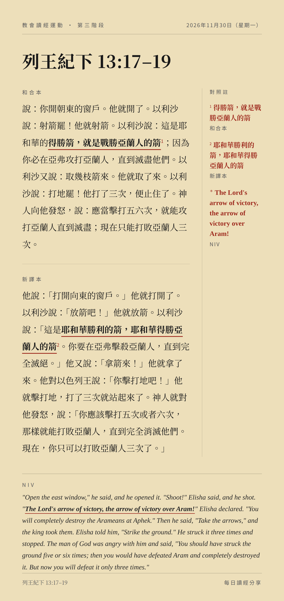

中文朗讀（新譯本）
English reading (NIV)
說：你開朝東的窗戶。他就開了。以利沙說：射箭罷！他就射箭。以利沙說：這是耶和華的得勝箭，就是戰勝亞蘭人的箭；因為你必在亞弗攻打亞蘭人，直到滅盡他們。以利沙又說：取幾枝箭來。他就取了來。以利沙說：打地罷！他打了三次，便止住了。神人向他發怒，說：應當擊打五六次，就能攻打亞蘭人直到滅盡；現在只能打敗亞蘭人三次。
他說：「打開向東的窗戶。」他就打開了。以利沙說：「放箭吧！」他就放箭。以利沙說：「這是耶和華勝利的箭，耶和華得勝亞蘭人的箭。你要在亞弗擊殺亞蘭人，直到完全滅絕。」他又說：「拿箭來！」他就拿了來。他對以色列王說：「你擊打地吧！」他就擊打地，打了三次就站起來了。神人就對他發怒，說：「你應該擊打五次或者六次，那樣就能打敗亞蘭人，直到完全消滅他們。現在，你只可以打敗亞蘭人三次了。」
"Open the east window," he said, and he opened it. "Shoot!" Elisha said, and he shot. "The Lord's arrow of victory, the arrow of victory over Aram!" Elisha declared. "You will completely destroy the Arameans at Aphek." Then he said, "Take the arrows," and the king took them. Elisha told him, "Strike the ground." He struck it three times and stopped. The man of God was angry with him and said, "You should have struck the ground five or six times; then you would have defeated Aram and completely destroyed it. But now you will defeat it only three times."
以利沙臨終，約阿施王來探佢。以利沙叫佢開窗射箭，宣告呢支係「耶和華勝利的箭」；再叫佢攞箭打地，王打咗三次就停手。以利沙嬲咗：應該打五六次，噉就能完全消滅亞蘭人，而家只可以打敗佢哋三次。呢三節係全章嘅高潮，註釋者一致認為係全章中心。三節都有譯法分別：第17節原文「勝利的箭」講咗兩次，新譯本同 NIV 照跟，和合本壓縮成一句；第18節王打完三次，和合本話「便止住了」，新譯本話「就站起來了」；第19節「五六次」對「五次或者六次」。
應許係神俾嘅，但約阿施打咗三次就停手：有時唔係神俾得少，係我哋攞得太輕手。